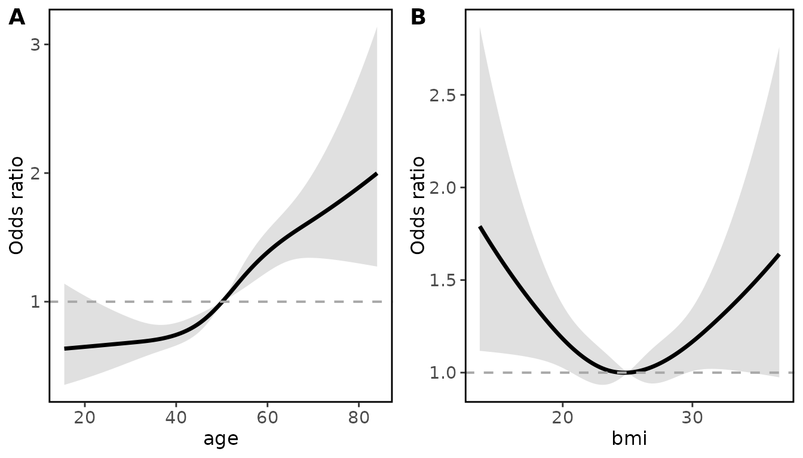
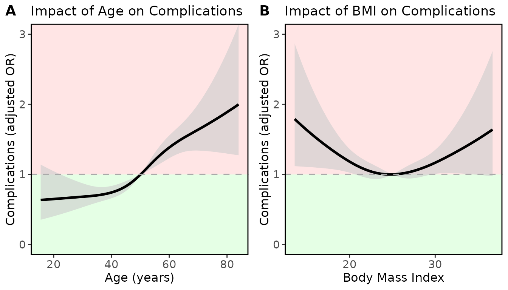

Standard workflow with restricted cubic splines
Source:vignettes/Standard_workflow_with_restricted_cubic_splines.Rmd
Standard_workflow_with_restricted_cubic_splines.RmdIntroduction
The modelsummary_rms function is designed to process
output from models fitted using the rms package and
generate a summarised dataframe of the results. The goal is to produce
publication-ready summaries of the models. The ggrmsMD
function generates publication ready plots of variables modelled with
restricted cubic splines.
This vignette will guide you through the basic usage of the functions on a model including restricted cubic splines.
Installation and Setup
For these vignettes we will use a simulated dataset to predict the impact of age, BMI, Sex and Smoking status on outcome after surgery. The models are for illustration purposes only. Note, if you plan to output the results into Microsoft Word, we recommend also installing flextable and officer.
# Load in the simulated data
data <- simulated_rmsMD_data()
# Set the datadist which is required for rms modelling
# (these two lines are standard)
dd <- datadist(data)
options(datadist='dd') Fitting Model with Restricted Cubic Splines
Restricted Cubic Splines (RCS) are a flexible modelling tool used to capture non-linear relationships between predictors and outcomes. In medicine, for the majority of continuous variables (e.g. age, blood pressure, or biomarker levels) the assumption of linearity may not hold. A key highlight of the rms package is the ability to analyse variables using RCS.
The rmsMD package is designed to report and summarise models that include RCS terms. Here is an example model predicting occurrence of complications after surgery (binary), with the continuous variables age and BMI modelled using restricted cubic splines with 4 knots:
Intuitive output with modelsummary_rms
Individual coefficients for RCS terms are difficult to interpret in
isolation. Instead, an overall p-value can be generated to assess
whether the overall relationship between the RCS variable and outcome is
significant. By default modelsummary_rms removes the
individual RCS coefficients, replacing them with the overall p-value for
that variable.
# Generate an rmsMD model summary using default settings
modelsummary_rms(fit_lrm)
#> RCS overall p-values displayed are from Wald tests.
#> To use the recommended test for this model type (LR test),
#> please set 'x = TRUE, y = TRUE' when fitting the model.
#> variable OR_95CI Pvalue
#> 1 sex=Female Ref -
#> 2 sex=Male 1.078 (0.927 to 1.255) 0.330
#> 3 smoking=Never Ref -
#> 4 smoking=Former 0.986 (0.806 to 1.207) 0.892
#> 5 smoking=Current 2.078 (1.731 to 2.496) <0.001
#> 6 RCSoverallP: age Wald test <0.001
#> 7 RCSoverallP: bmi Wald test 0.030
# Outputting this as a table
knitr::kable(modelsummary_rms(fit_lrm))
#> RCS overall p-values displayed are from Wald tests.
#> To use the recommended test for this model type (LR test),
#> please set 'x = TRUE, y = TRUE' when fitting the model.| variable | OR_95CI | Pvalue |
|---|---|---|
| sex=Female | Ref | - |
| sex=Male | 1.078 (0.927 to 1.255) | 0.330 |
| smoking=Never | Ref | - |
| smoking=Former | 0.986 (0.806 to 1.207) | 0.892 |
| smoking=Current | 2.078 (1.731 to 2.496) | <0.001 |
| RCSoverallP: age | Wald test | <0.001 |
| RCSoverallP: bmi | Wald test | 0.030 |
P values for restricted cubic spline terms in these outputs indicate
whether there is an association between the predictor and outcome.
Please note that this association can be either linear or
non-linear. The P value reflects the presence of an association, not its
shape. We recommend that these associations are then plotted using the
ggrmsMD function, shown below, to assess the nature of
these relationships.
Plotting with ggrmsMD
Now that the model and overall p values have been assessed, the
ggrmsMD function from rmsMD can be used to
assess the relationship between variables modelled with restricted cubic
splines, and the outcome.
As a minimum, the model fit and data should be passed into the
function. ggrmsMD will then generate plots for all
variables which were modelled with restricted cubic splines. The default
behavior is to plot: predicted outcome for linear regression models,
adjusted OR for logistic regression, and adjusted HR for Cox regression.
All of these plots are adjusted for all other variables in the
model.
Here is the most basic use case with the logistic regression model for post-operative complications above:
# Most basic output
ggrmsMD(fit_lrm, data)
Further arguments in ggrmsMD allow these plots to be
editted into a publication ready format. Example of a publication ready
plot:
# x axis labels can be stored in a list
xlabels <- list ("age" = "Age (years)",
"bmi" = "Body Mass Index")
# titles for each variable can be stored in a list
titles <- list ("age" = "Impact of Age on Complications",
"bmi" = "Impact of BMI on Complications")
ggrmsMD(fit_lrm, data,
# set y axis label for all plots
ylab = "Complications (adjusted OR)",
# set y axis limits
ylim = c(0,3),
# set higher OR as inferior outcome to assign red shading
shade_inferior = "higher",
# set x axis labels for each variable
xlabs = xlabels,
# set titles for each variable
titles = titles
)
Further arguments allow for log transformation of axes, selection of which variables are included, option to output plot lists rather than combined plots, ability to plot predicted probability rather than OR, etc. For further details please see the vignette Further_details_ggrmsMD. Outputted plots are ggplots, and therefore can be further adapted using that framework.
Exporting to Microsoft Word
The output of modelsummary_rms is a dataframe, as this
is easy to work with and further process if required. This dataframe
output can easily be exported to a word document using
flextable and officer packages.
library(officer)
library(flextable)
library(dplyr)
#>
#> Attaching package: 'dplyr'
#> The following objects are masked from 'package:Hmisc':
#>
#> src, summarize
#> The following objects are masked from 'package:stats':
#>
#> filter, lag
#> The following objects are masked from 'package:base':
#>
#> intersect, setdiff, setequal, union
# Convert modelsummary_rms dataframe to a flextable
rmsMD_as_table <- flextable(modelsummary_rms(fit_lrm))
#> RCS overall p-values displayed are from Wald tests.
#> To use the recommended test for this model type (LR test),
#> please set 'x = TRUE, y = TRUE' when fitting the model.
# Create a new Word document, add table and a heading
doc <- read_docx() %>%
body_add_flextable(rmsMD_as_table) %>%
body_add_par("Model summary from rmsMD", style = "heading 2")
# Temporary file path for output (replace with your actual path as needed)
output_path <- file.path(tempdir(), "example_output.docx")
# Generate the Word document
print(doc, target = output_path)
# Alternatively, save as 'temp.docx' in the working directory
print(doc, target = "temp.docx")